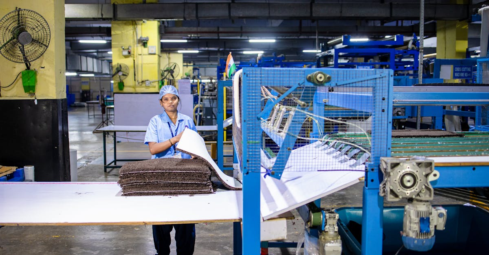

Un Pari Audacieux sur le Secteur de la Défense Indienne
Dans un paysage financier mondial en constante évolution, marqué par des incertitudes géopolitiques croissantes, certains fonds d'investissement parviennent à tirer leur épingle du jeu. C'est le cas d'un fonds géré par Kotak Mahindra Asset Management Co. (Kotak Mahindra AMC), qui a récemment fait parler de lui en surperformant 98% de ses pairs. Ce fonds, fort d'un actif sous gestion de 3 milliards de dollars, a fait un pari stratégique et audacieux : investir massivement dans le secteur de la défense indien. Cette stratégie, à première vue surprenante pour certains, repose sur une analyse fine des dynamiques actuelles. Les tensions géopolitiques mondiales, loin d'être une simple perturbation, sont perçues par les gestionnaires de ce fonds comme un catalyseur potentiel pour l'industrie de défense nationale. L'Inde, consciente de sa position géopolitique et de ses besoins en matière de sécurité, cherche activement à renforcer sa production locale d'armements. Cette volonté s'inscrit dans une politique gouvernementale plus large visant à réduire la dépendance aux importations, un objectif stratégique majeur pour un pays de la taille et de l'influence de l'Inde. En se positionnant ainsi, le fonds Kotak Mahindra AMC anticipe une croissance significative des entreprises indiennes spécialisées dans la fabrication d'équipements militaires, de technologies de défense et de services associés. L'analyse des marchés financiers, qu'il s'agisse des actions traditionnelles ou des marchés plus complexes comme le Forex, requiert une compréhension profonde des facteurs macroéconomiques et géopolitiques. Les mouvements des devises, par exemple, peuvent être directement influencés par les tensions internationales et les politiques de défense des grandes puissances. Un fonds qui anticipe ces évolutions sur un secteur spécifique comme la défense peut également avoir une vision éclairée sur les marchés monétaires, où la volatilité est souvent exacerbée par ces mêmes facteurs.

Le Contexte Géopolitique : Un Moteur de Croissance pour la Défense
L'actualité internationale récente est indéniablement marquée par une recrudescence des tensions géopolitiques. Des conflits régionaux aux rivalités entre grandes puissances, le sentiment d'instabilité globale s'est intensifié. C'est dans ce contexte que le pari du fonds indien prend tout son sens. Les nations du monde entier revoient leurs stratégies de sécurité et, par conséquent, leurs budgets de défense. L'Inde, en particulier, occupe une position stratégique délicate, confrontée à des défis sécuritaires à ses frontières et aspirant à jouer un rôle plus affirmé sur la scène internationale. La politique du gouvernement indien, axée sur l'initiative 'Make in India', vise explicitement à transformer le pays en un hub de production d'équipements de défense. L'objectif est double : d'une part, satisfaire les besoins croissants de ses propres forces armées et, d'autre part, devenir un exportateur majeur dans ce secteur. Cette stratégie de souveraineté industrielle est essentielle pour réduire la vulnérabilité face aux interruptions potentielles des chaînes d'approvisionnement mondiales, une leçon amèrement apprise lors des récentes crises sanitaires et géopolitiques. Pour les entreprises indiennes du secteur de la défense, cela se traduit par une augmentation des commandes locales, des opportunités de recherche et développement, et un soutien gouvernemental accru. Les entreprises qui parviennent à innover et à produire des technologies de pointe, qu'il s'agisse de systèmes d'armes, de drones, de cyber-sécurité ou de technologies spatiales, sont particulièrement bien positionnées pour bénéficier de cette dynamique. L'analyse de ces opportunités d'investissement nécessite une veille constante des annonces gouvernementales, des contrats signés et des avancées technologiques. Dans le monde du trading, notamment sur le Forex, une telle conjoncture géopolitique peut également créer des opportunités. Les devises des pays directement ou indirectement affectés par ces tensions peuvent connaître une volatilité accrue, offrant des possibilités de trading pour ceux qui savent analyser et anticiper ces mouvements. Les agents IA de trading, par leur capacité à traiter d'énormes volumes de données et à identifier des corrélations complexes, peuvent être particulièrement efficaces dans de tels environnements.
L'Indépendance Stratégique : La Vision Indienne
La quête d'indépendance stratégique est au cœur de la politique de défense indienne. Historiquement, le pays a été l'un des plus grands importateurs d'armes au monde, dépendant de fournisseurs étrangers pour une part significative de ses besoins militaires. Cette dépendance était non seulement coûteuse, mais représentait également un risque géopolitique majeur, laissant l'Inde potentiellement vulnérable aux décisions ou aux contraintes de ses partenaires commerciaux. La vision actuelle du gouvernement indien est de renverser cette tendance en favorisant une industrie de défense nationale robuste et autonome. Le programme 'Atmanirbhar Bharat' (Inde auto-suffisante) met un accent particulier sur le développement des capacités locales dans des secteurs critiques, dont la défense fait partie intégrante. Cela se traduit par des politiques incitatives pour les entreprises privées et publiques, des investissements massifs dans la recherche et le développement, et la promotion des exportations de matériel de défense indien. Les entreprises locales sont encouragées à développer des technologies de pointe, à acquérir des savoir-faire et à produire des systèmes d'armes sophistiqués, allant des avions de combat aux sous-marins, en passant par les missiles et les systèmes de communication sécurisés. Cette approche vise à créer un écosystème de défense intégré, capable de répondre aux besoins nationaux tout en renforçant la position de l'Inde en tant qu'acteur de sécurité régional et mondial. Pour les investisseurs, cela représente une opportunité unique de participer à la croissance d'un secteur clé, soutenu par une volonté politique forte et une demande intérieure significative. L'analyse de ce marché demande une compréhension des cycles de développement des produits militaires, des processus d'approbation gouvernementaux et des enjeux technologiques. Ces facteurs, bien que spécifiques au secteur de la défense, ont des échos dans d'autres domaines d'investissement. Par exemple, la manière dont les politiques gouvernementales influencent les marchés peut être observée dans de nombreux secteurs, y compris ceux qui sont traditionnellement plus volatils comme le Forex. Les stratégies d'investissement qui privilégient la diversification et l'analyse prédictive, souvent assistées par des outils sophistiqués comme les agents IA, peuvent mieux naviguer dans un environnement aussi complexe.

Le Rôle de l'Intelligence Artificielle dans l'Analyse d'Investissement
Dans un monde où l'information circule à une vitesse fulgurante et où la complexité des marchés financiers ne cesse de croître, l'intelligence artificielle (IA) s'impose comme un outil indispensable pour les investisseurs avisés. Le cas du fonds indien pariant sur la défense illustre parfaitement cette tendance. Pour identifier de telles opportunités, il faut être capable de traiter et d'analyser une quantité phénoménale de données : rapports financiers, actualités géopolitiques, annonces gouvernementales, évolutions technologiques, et même le sentiment du marché. Les algorithmes d'IA, notamment ceux basés sur le machine learning et le deep learning, excellent dans cette tâche. Ils peuvent identifier des schémas, des corrélations et des tendances qui échapperaient à l'analyse humaine traditionnelle. Dans le domaine du trading automatisé sur le Forex, l'IA joue déjà un rôle prépondérant. Les agents IA sont capables de surveiller les marchés 24h/24, d'exécuter des transactions à une vitesse et une précision inégalées, et de s'adapter en temps réel aux conditions changeantes du marché. Ces systèmes apprennent en permanence à partir des données historiques et des transactions en cours pour optimiser leurs stratégies. La capacité de ces agents à analyser des flux d'informations complexes, comme ceux liés aux tensions géopolitiques affectant les devises ou les marchés des matières premières, est un atout majeur. Ils peuvent évaluer l'impact potentiel d'un événement sur différentes paires de devises, identifier des opportunités de trading à court ou long terme, et gérer le risque de manière proactive. L'investissement dans des secteurs spécifiques, comme la défense indienne, peut également bénéficier de l'IA. Des algorithmes peuvent être entraînés pour scanner les actualités mondiales, filtrer les informations pertinentes sur le secteur de la défense, analyser les bilans des entreprises, et même prédire l'impact des politiques gouvernementales sur les cours des actions. Cette capacité d'analyse prédictive et d'exécution automatisée est précisément ce que propose ForexBot AI : un agent IA conçu pour naviguer les complexités du marché des changes, en exploitant la puissance de l'intelligence artificielle pour générer des opportunités de trading.
Les Défis et Opportunités pour les Investisseurs
Investir dans le secteur de la défense indienne, bien que prometteur, n'est pas exempt de défis. La nature même de ce secteur, fortement régulée et dépendante des décisions gouvernementales, implique des cycles d'investissement potentiellement longs et une certaine opacité. Les contrats militaires sont souvent de grande ampleur mais peuvent prendre des années à être négociés et exécutés. De plus, les entreprises de ce secteur doivent naviguer dans un environnement géopolitique complexe, où les relations internationales peuvent évoluer rapidement, affectant à la fois la demande et les chaînes d'approvisionnement. La diversification est donc une clé essentielle pour atténuer ces risques. Le fonds de Kotak Mahindra AMC, en pariant sur 98% de ses pairs, montre qu'il a bien compris cette nécessité, en se positionnant sur un segment porteur mais potentiellement volatil. Les opportunités résident dans la croissance structurelle attendue du secteur, soutenue par la politique d'autosuffisance de l'Inde et le contexte géopolitique mondial. Les entreprises indiennes qui développent des technologies de pointe, adoptent des processus de production efficaces et parviennent à exporter leurs produits sont particulièrement bien placées. L'innovation dans des domaines comme la cyber-défense, les drones autonomes ou les systèmes de renseignement électronique pourrait offrir des perspectives de croissance exponentielle. Pour les investisseurs individuels, accéder directement à ce marché peut être complexe. L'investissement via des fonds spécialisés ou des ETFs sectoriels peut être une solution plus accessible. Cependant, il est crucial de bien comprendre la composition de ces fonds et les stratégies sous-jacentes. Dans le monde du trading financier, la capacité à réagir rapidement aux changements et à exploiter la volatilité est primordiale. Le Forex, marché le plus liquide au monde, offre de nombreuses opportunités, mais aussi des risques considérables. Les agents IA, comme ceux développés par ForexBot AI, sont conçus pour automatiser le processus de trading, en analysant en continu les données du marché et en exécutant des transactions basées sur des algorithmes sophistiqués. Ils peuvent aider les traders à naviguer dans la complexité des marchés, à identifier des opportunités potentielles et à gérer les risques, même lorsque des facteurs externes comme les tensions géopolitiques influencent les marchés mondiaux.

L'Impact sur les Marchés Financiers Mondiaux et le Forex
L'investissement audacieux du fonds indien dans le secteur de la défense a des répercussions qui dépassent largement les frontières de l'Inde. Les marchés financiers mondiaux sont de plus en plus interconnectés, et les mouvements significatifs dans un secteur clé d'une économie majeure comme l'Inde peuvent influencer d'autres marchés, y compris le marché des changes (Forex). La demande accrue pour les produits de défense indiens peut entraîner une appréciation de la roupie indienne, à mesure que les revenus d'exportation augmentent et que le pays réduit sa dépendance aux importations coûteuses. Cette évolution de la roupie peut avoir un impact sur les paires de devises majeures impliquant l'INR. De plus, l'augmentation des dépenses de défense mondiales, stimulée par les tensions géopolitiques, peut affecter les prix des matières premières (comme le pétrole, essentiel pour les opérations militaires) et les valeurs refuges traditionnelles. Les devises des pays producteurs de pétrole ou ceux qui sont fortement exposés aux risques géopolitiques peuvent connaître une volatilité accrue. Les traders sur le Forex doivent être particulièrement attentifs à ces dynamiques. L'analyse des facteurs macroéconomiques, des flux de capitaux et des événements géopolitiques est cruciale pour anticiper les mouvements des devises. C'est là que l'intelligence artificielle et le trading automatisé prennent tout leur sens. Les agents IA peuvent traiter en temps réel des flux d'informations provenant de sources multiples (actualités financières, rapports économiques, analyses géopolitiques) pour identifier des corrélations et des opportunités de trading. Ils peuvent évaluer comment une augmentation des dépenses de défense en Inde, par exemple, pourrait impacter la paire EUR/USD ou USD/JPY, en tenant compte de multiples variables. La capacité d'un système comme ForexBot AI à opérer 24h/24 et 5j/7 sur le marché des changes, en s'adaptant constamment aux conditions du marché, offre un avantage significatif dans un environnement aussi dynamique et imprévisible. Ces outils permettent de réagir rapidement aux événements mondiaux, de saisir les opportunités fugaces et de gérer le risque de manière plus efficace, même lorsque les fondamentaux macroéconomiques sont influencés par des facteurs géopolitiques complexes.
Conclusion : Anticiper l'Avenir avec des Outils Innovants
L'histoire de ce fonds indien qui surperforme ses pairs en misant sur le secteur de la défense est une illustration éloquente des transformations profondes qui animent les marchés financiers et l'économie mondiale. Elle souligne l'importance d'une analyse prospective, capable d'identifier les tendances structurelles émergentes, souvent masquées par le bruit médiatique ou les fluctuations à court terme. Les tensions géopolitiques, bien que sources d'inquiétude, agissent comme des catalyseurs pour des secteurs stratégiques comme celui de la défense, poussant à l'innovation et à l'autosuffisance nationale. L'Inde, avec sa politique volontariste, se positionne comme un acteur clé dans cette nouvelle donne. Pour les investisseurs, qu'ils soient institutionnels ou particuliers, l'enjeu est de taille : comment naviguer dans cette complexité croissante et identifier les opportunités les plus prometteuses ? La réponse réside de plus en plus dans l'adoption d'outils technologiques avancés. L'intelligence artificielle, avec sa capacité à traiter d'énormes volumes de données et à identifier des schémas complexes, offre des perspectives révolutionnaires. Dans le domaine du trading automatisé sur le Forex, cela se traduit par des agents IA capables de surveiller les marchés 24h/24, d'exécuter des transactions avec une précision inégalée et de s'adapter en temps réel aux conditions changeantes. Ces systèmes ne se contentent pas de suivre les tendances ; ils apprennent, anticipent et optimisent en permanence. Des plateformes comme ForexBot AI incarnent cette nouvelle ère, où la technologie permet de démocratiser l'accès à des stratégies de trading sophistiquées. En exploitant la puissance de l'IA, les traders peuvent mieux appréhender les dynamiques complexes des marchés, qu'elles soient influencées par des facteurs économiques, géopolitiques ou technologiques, et ainsi maximiser leur potentiel de performance tout en gérant efficacement les risques. L'avenir de l'investissement et du trading sera indéniablement façonné par la synergie entre l'intelligence humaine et la puissance de calcul de l'IA.